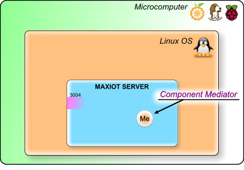
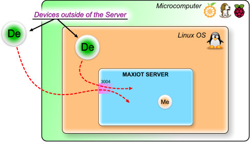
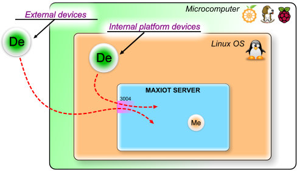
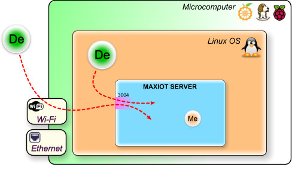
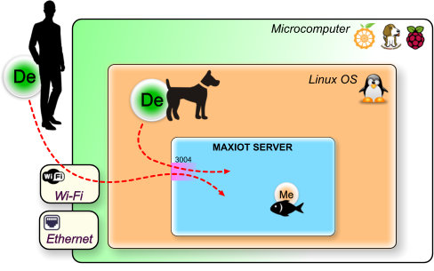
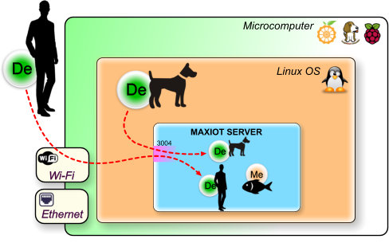
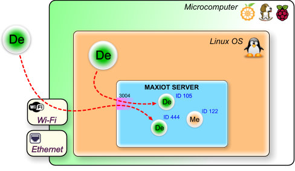

MAXIOT SERVER¶
MAXIOT SERVER-რი ეს არის MAXIOT სისტემის მთავარი ნაწილი, რომელიც უზრუნველყოფს საგნების ინტერნეტისთვის (IOT) საჭირო ყველა ძირითად ფუნქციებს.
MAXIOT SERVER-რი უზრუნველყოფს იმ ვირტუალურ სამყაროს არსებობას, რიმელშიც იმყოფება ფიზიკური სამყაროდან შემოყვანილი და ასევე ვირტუალური სამყაროში შექმნილი მოწყობილობები. ასეთ მოსყობილობებს სისტემაში, MAXIOT კომპონენტები ეწოდება. MAXIOT SERVER-რი ასევე უზრუნველყოფს კომპონენტების შორის შექმნილი კავშირების არსებობას. MAXIOT SERVER-რიში ფიზიკური მოსწყობიობების შემოყვანას, ვირტუალური მოწყობილობის შექმნას და მათ შორის კავშირების დადგენა ხდება MAXIOT STUDIO - ვებ აპლიკაციის საშუალებით. MAXIOT STUDIO-სთან დაკავშირებული საკითხები განიხილულია ამ დოკუმენტაციის შესაბამის სექციაში.
MAXIOT SERVER-რის აპლიკაცია დაწერილია C ენის გამოყენებით და მის სამუშაო გარემოს წარმოადგენს ლინუქსის ოპერაციული სისტემა. სერვერის შეიძლება დაკომპილირდეს როგორც ARM ასევე x86 არქიტეკტურის კომპიუტერებზე, შესაბამისად სერვერის დაინსტალირება შესაძლებელია პრაქტიკულად ნებიმიერი მიკროკომპიუტერის ან ვირტუალური კომპიუტერის პლათფორმაზე. MAXIOT SERVER-რის პროგრამული კოდი დაწერილია ისე , რომ რაც შეიძლება ოპტიმიალურად იყოს გამოიყენებული კომპიუტერის პროცესორის და ოპერატიული მეხსიერების რესურსები.

როგორც მრავალი სხვა სერვერი MAXIOT SERVER-იც ჩართულია კომპიუტერულ ქსელში და მასთან დაკავშირება ხდება ინტერნეტ TCP/IP ქსელური პროტოკოლის საშუალებით. სხვადასხვა გარე მოწყობილობები შემოდიან MAXIOT SERVER-ში სპეციალურად მათთვის შექმნილი 3004 პორტის გავლით. (რა არის პორტი) თუ სერვერს წამოვიდგენთ როგორც რამე დაწესებულება, მაშინ პორტი ეს არის რომელიმე ოთახის კარები. დაწესებულებაში არსებულ ყველა ოთახს გააჩნია კარებეი თავისი უნიკალური ნომრით, შესაბამისად დაწესებულებაში შემოსულმა კლიენტმა იცის რა მისთვის საჭირო ოთახის ნომერი, პირდაპირ მიემართება შესაბამის ოთახისკენ.

MAXIOT SERVER-ის ლოკალური მოწყობილობა(მედიატორი) არ იყენებს 3004 პორტს, რადგან ის ისედაც იმყოფება სერვერის შიდა სივრცეში. ამ მოწყობილობას ქვია მედიატორი(Me) რადგან მხოლოდ ამ კომპონენტს შეუძლია მონაცემების უშუალოდ სერვერზე, ვირტუალურ სამყაროში დამუშავება. უფრი დაწვრილებით ჩვენ მას განვიხილავთ დოკუმენტაციის wwwwwwwww სექციაში. კომპონენტი მედიატორი გამოსახუია ნახატში როგორც ნარინჯისფერი წრე, შიგნით განთავსებული Me სიმბოლოთი.
{kind=link}
ყველა დანარჩენი მოწყობილობა რომელიც, არ იმყოფება უშუალოდ MAXIOT SERVER-ზე ითვლება, სერვერის გარე მოწყობილობად. მნიშვნელობა არა ქვს იმას თუ სად იმნყოფება ეს მოწყობილობა - უშუალოდ იმავე მიკროკომპიუტერში, რომელშიც იმყოფება MAXIOT SERVER-რი თუ სადმე სხვაგან, ათასობით კილომეტრით მოშორებით, იქნება ის ფიზიკური თუ ვირტუალური(რამე პროგრამა გაშვებული რაიმე კომპიუტერზე) - ყველა ეს მოწყობილობა MAXIOT SERVER-იში შემოსასვლელად იყენებს 3004 პორტს. სერვერის გარე მოწყობილობები ნახატში წარმოდგენილია, როგორც მწვანე წრე, შიგნით განთავსებული De სიმბოლოთი.
{kind=link}
იმის მიხედვით თუ სად იმყოფება სერვერის გარე მოწყობილობები, ჩვენ შეგვიძლია დავყით ისინი 2 ჯგუფად: პლათფორმის შიდა და გარე მოწყობილობად. პლათფორმის შიდა მოწყობილობად ითვლება ყველა ის მოწყობილობა რომელიც იმყოფება უშუალოდ იმავე ოპერაციული სისტემაში სადაც იმყოფრბა MAXIOT SERVER-ი. პლათფორმული გარე მოწყობილობაა, ყველა ის მოწყობილობა, რომელიც იმყოფება იმ მიკროკომპიუტერის გარეთ რომელზეც არის დაინსტალირებული MAXIOT SERVER-ი. პლათფორმული გარე მოწყობილობას, უბრალოდ გარე მოწყობილობას უძახიან.
{kind=link}
არსებობს 2 ძირითადი საშუალება, რომ MAXIOT სისტემის მიკროკომპიუტერი მივუერთოთ გარე კომპიუტერულ ქსელს. ეს არის Wi-Fi (უკაბელო) და Ethernet -ტი. პლათფორმის გარე მოწყობილობები იყენებენ კომპიუტერულ ქსელს MAXIOT პლათფორმაში არსებულ MAXIOT SERVER-ში შესვლელად. ასევე კომპიუტერული ქსელის გავლით ვახდენთ სისტემის კომპიგურაციას. იმ შემთხვევაში თუ პროექტს არ ჭირდება პლათფორმის გარე მოწყობილობები, სისტემა შეგვიძლია გავთიშოთ გარე კომპიუტერის ქსელიდან და ჩავრთოთ მხოლოდ დაკომფიგურირების საჭიროების შემთხვევაში.
{kind=link}
შედარება: იმისთვის რომ უკეთესაგ გავიგოთ MAXIOT SERVER-ში მიმდინარე პროცესები მოდით განვიხილოთ შემდეგი შედარება. წარმოვიდგნოთ რომ პლათფორმის შიდა მოწყობილობები რომლებიც იმყოფებიან იმავე ოპერაციული სისტემაში სადაც დაინსტალირებულია MAXIOT SERVER-რი წარმოადგენენ ცხოველიებს. ხოლო პლათფორმის გარე მოწყობილობები წარმოადგენენ ადამიანებს და მედიატორები (MAXIOT SERVER-რი ვირტუალური მოწყობილობები) წყლის ბინადრებს თევზებს. მაშინ ჩვენის სისტემა გამოჩნდება ასე:
{kind=link}
და თუ წარმოვიდგენთ რომ MAXIOT SERVER-რი ეს არის ტბა, მაშინ ჩვენ დავინახავთ შემდეგ სურათს:
{kind=link}
ტბის პირას მყოფი ადამიანის და ძაღლის ფორმები აისახა ტბაში როგორც ანარეკლი. და თუ გავითვალისწინებთ იმას რომ ანარაკლე 100% გადმოსცემს ადამინის და ძაღლის ვიზუალურ მხარეს ოპტიკური ეფექტის კუთხით, შეგვიძლია ვთქვათ რომ ადამიანი და ძაღლი ტბაში არიან იქ სადაც დაცურავენ თევზები. ტბის ზედაპრზე არსებული ანარეკლი აბსოლუტურად გადმოსცემს ყველა იმ მოქმედებებს რასაც ასრეულებს ადამიანი და ძაღლი თიქოს და ანარეკლი ადამიანის და ძარლის ავატარია რომელიც არსებობს ტბის ზედაპირზე. ზუსტად იგივე პროცესი მიმდინარეობს MAXIOT SERVER-რში, იმგანსხვავებით რომ ვაძლევთ უფლებას გამოჩნდეს თუ არა ამა თუ იმ ონიექტის ანარეკლი ტბის ზედაპირზე და თუ ჩვენ ადამმიანს და ზაღლს მივცემთ ამ უფლებას მათი ანარეკლები(ავატარები) გაჩნდება MAXIOT SERVER-რის ვირტუალურ სივრცესი ისე როგორც ეს გამოსახულია ნახატში:
{kind=link}
პლათფორმის შიდა და პლათფორმის გარე მოწყობილობას, ორივე ტიპის კომპონენტს MAXIOT სისტემაში ერთნაერი ვიზუალი გააჩნია. სისტემა არ განარჩევს პლათფორმის შიდა და გარე მოწყობილობას, მისთვის ისინი, ორივე უბრალოდ De(მოწყობილობები) კომპონენტებია. Me(მედიატორი) ვიზუალურად გავს De კომპონენტს მათ შორის განსხვავება მხოლოდ ფერში და De,Me ნიშნებშია. ისმის კითხვა თუ პლათფორმის შიდა და გარე მოწყობილობას ერთნაერი ავატარები აქვთ რიგირ ხვდება გარე მოწყობილობა რომელია მიასი ავატარი ? - სისტემაში შემოსული გარე მოწყობილობა თავის ავატარს პულობს უნიკალური ნომრის მიხედვით. უნიკალური ნომერი ID ენიჭება MAXIOT SERVER-რის ყველა კომპონენტს მათ შორის მედიატორსაც.
{kind=link}
სერვერის გარე მოწყობილობებს სისტემაში ქვიათ უბრალოდ მოწყობილობა (Device) და ის გამოსახუია ნახატში როგორც მწვანე წრე, შიგნით განთავსებული De სიმბოლოთი.
MAXIOT SERVER-რისთვის ყველა გარე მოწყობილობა
უბრალოდ გარე მოწყობილობა (MAXIOT SERVER-რი არ განსაზღვრავს გარე მოწყობილობის ბუნებას)
თუ სად იმყოფება გარე მოწყობილობა MAXIOT SERVER-რი
რა არის კლიენტი¶
ტბა … და ანარეკლები
რომელიმე სხვა კომპონენტიდან მინაცემის მიღება და დამუშავებ
მას შეუძლია
კომპონენტი მედიატორი დგას ორ სხვადასხვა კომპონენტს შორის და ახდენს ერთისგან მიღებული მომაცემის დამუშავებას და მერესთვის მიწოდებას.
რადგან ის ხშირად
გამოიყენება სხვა მოწყობილობებიდან წარმოქმნილი მონაცემების დამუშავებისთვის. მაგალითად: მედიატორს(Me) შეუძლია გარე ტემპერატურის საზომი მოწყობილობიდან ფარენგეიტებში მიღებული ტემპერატურა გადაიყვანოს ცელსიუსში და გადაუგზავნოს მოწყობილობას, რომელიც ასახავს ტემპერატურას რაიმე დისპლაიზე. ანუ კომპონენტი მედიატორი დგას ორ სხვადასხვა კომპონენტს შორის და ახდენს ერთისგან მიღებული მომაცემის დამუშავებას და მერესთვის მიწოდებას.
მაგრამ მედიატორი შეიძლება თვიტონაც იყოს მონეცემების წარმოქმნელი
ან საბოლოო მიმღები.
მაგალითად: დამუშავებული მონაცემების გადაეცემეა სხვა გარე მოწყობილობას ან მონაცემების შენახვა რომე მონაცემთა ბაზებში და სხვა…. ასეთი სცენარი შეიძლება იყოს უსასრულოდ ბევრი, რადგან უშუალოდ სისტემის მენეჯრი ქმნის მოქმედებეის სცენარის სკრიპტს. კომპონენტი მედიატორი გამოსახუია ნახატში როგორც ნარინჯისფერი წრე შიგნით განტავსებული Me სიმბოლოებით.